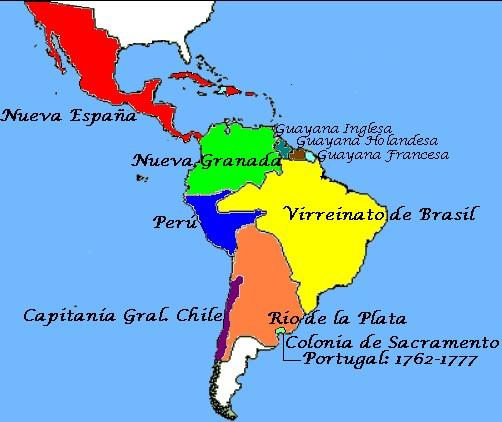
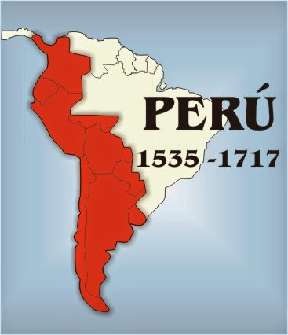
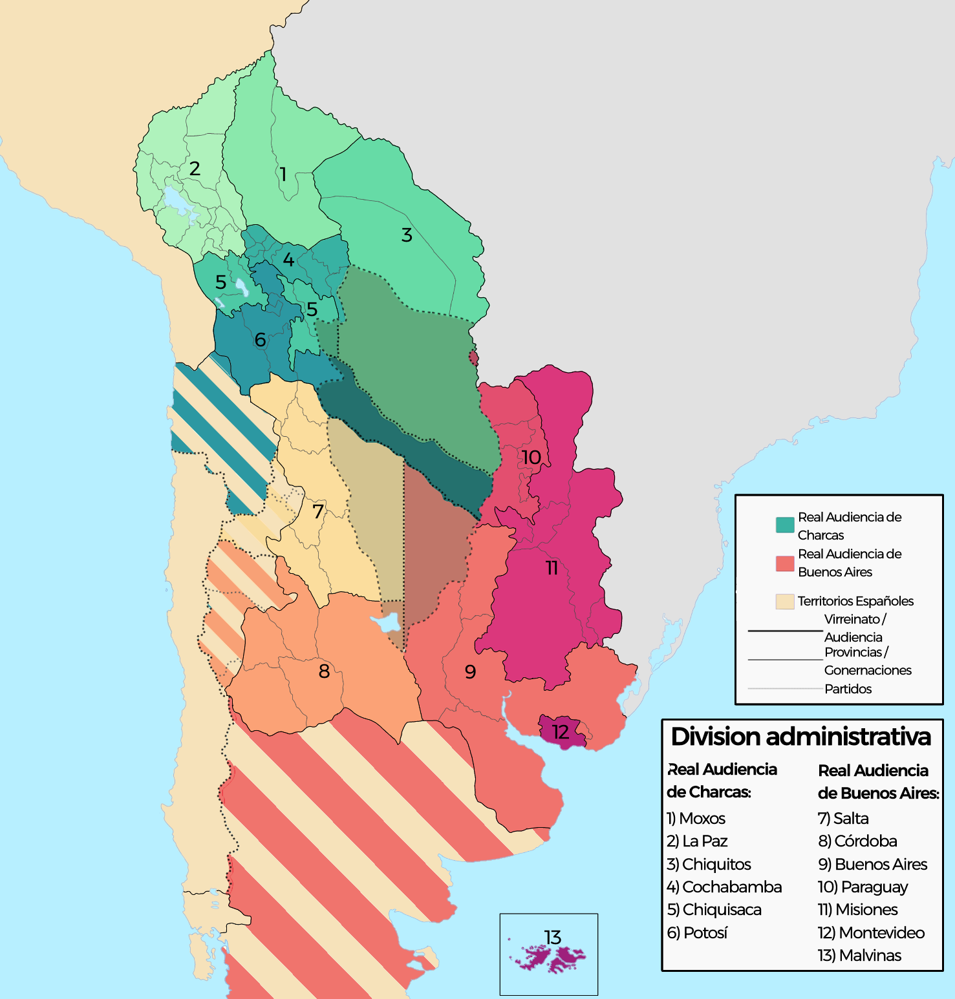
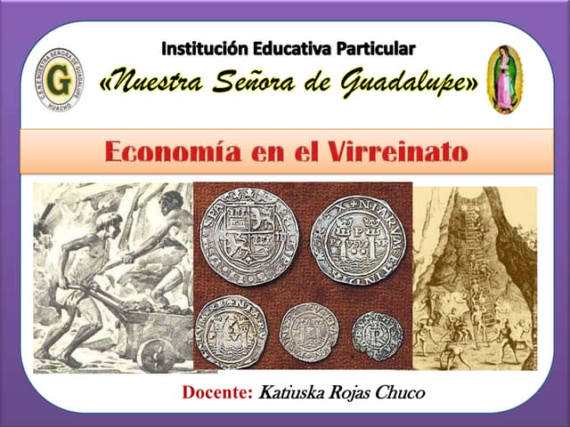

Historia
Un virreinato era una división territorial y administrativa del Imperio español (y también del portugués), gobernada por un virrey, quien representaba directamente al rey en las colonias. Su función principal era garantizar el control político, económico y militar de vastas regiones en nombre de la corona. Características principales de un virreinato Gobierno delegado: El virrey era el máximo representante del rey en América. Su autoridad abarcaba aspectos políticos, militares y judiciales. División territorial: Los virreinatos se dividían en audiencias, gobernaciones, corregimientos y municipios. Ejemplo: El Virreinato del Perú incluía audiencias como Lima, Charcas (Bolivia) y Quito (Ecuador). Función económica: Explotación de recursos (minería, agricultura, comercio) para beneficio de la corona. Sistema de monopolio comercial (solo España podía comerciar con sus colonias). Control social y religioso: Mantenimiento del orden mediante la jerarquía racial (españoles, criollos, mestizos, indígenas y esclavos). Evangelización de los indígenas por parte de las órdenes religiosas (como los jesuitas y franciscanos). Virreinatos más importantes de España en América Virreinato de Nueva España (1521–1821): Capital en México, abarcaba desde California hasta Centroamérica. Virreinato del Perú (1542–1824): Capital en Lima, controlaba casi toda Sudamérica en su época de mayor expansión. Virreinato de Nueva Granada (1717–1819): Capital en Bogotá, incluía Colombia, Venezuela, Ecuador y Panamá. Virreinato del Río de la Plata (1776–1814): Capital en Buenos Aires, abarcaba Argentina, Uruguay, Paraguay y Bolivia. Diferencia entre virreinato, capitanía general y gobernación Virreinato: Máxima división administrativa, gobernada por un virrey. Capitanía general: Territorios con importancia militar (ej: Chile, Venezuela). Gobernación: Áreas más pequeñas bajo el mando de un gobernador. Fin de los virreinatos Los virreinatos desaparecieron con las Guerras de Independencia (siglo XIX), cuando las colonias americanas se separaron de España.
Virreinato de Peru
El Virreinato del Perú fue una entidad territorial integrante del Imperio español en América, establecida en 1542 y disuelta en 1824 tras las guerras de independencia hispanoamericanas. Fue uno de los virreinatos más importantes de la corona española, abarcando en su máxima extensión gran parte de Sudamérica, incluyendo territorios de las actuales Perú, Ecuador, Bolivia, Colombia, Chile, Argentina, Paraguay y partes de Brasil. Origen y creación del Virreinato del Perú Fue creado por el rey Carlos I de España mediante las Leyes Nuevas (1542), con el objetivo de mejorar la administración colonial y controlar los abusos contra los indígenas. Su primer virrey fue Blasco Núñez de Vela, aunque su gobierno fue conflictivo y terminó con su muerte en una rebelión. La capital del virreinato fue Lima, fundada en 1535 por Francisco Pizarro como la "Ciudad de los Reyes". Organización política y administrativa El virreinato estaba gobernado por un virrey, representante directo del rey de España, y su estructura incluía: Audiencias (tribunales superiores con funciones administrativas). Corregimientos y gobernaciones (divisiones territoriales). El sistema de encomiendas (repartición de indígenas para su "protección" y evangelización a cambio de trabajo). Economía del Virreinato del Perú Minería: La principal actividad económica fue la extracción de plata, especialmente de las minas de Potosí (actual Bolivia) y Huancavelica (Perú). Comercio: El virreinato era el centro del comercio sudamericano, manejado a través del sistema de flotas y galeones que conectaba con Panamá y España. Tributos: Los indígenas pagaban impuestos (como la mita, un sistema de trabajo obligatorio en las minas). Sociedad virreinal La sociedad estaba fuertemente jerarquizada: Españoles peninsulares (nacidos en España, ocupaban los cargos más altos). Criollos (hijos de españoles nacidos en América, dueños de tierras y comercios). Mestizos (mezcla de españoles e indígenas). Indígenas (la mayoría, sometidos a trabajos forzados). Esclavos africanos (trabajaban en plantaciones y servicio doméstico). Decadencia y fin del Virreinato En el siglo XVIII, el virreinato perdió territorios con la creación del Virreinato de Nueva Granada (1717) y el Virreinato del Río de la Plata (1776). Las reformas borbónicas buscaron mayor control de la corona, pero generaron descontento entre criollos. Las rebeliones indígenas (como la de Túpac Amaru II en 1780) y las ideas independentistas llevaron a su caída. Finalmente, tras las campañas de San Martín y Bolívar, el virreinato fue disuelto en 1824 después de la Batalla de Ayacucho. Legado del Virreinato del Perú Dejó una fuerte influencia cultural, religiosa (catolicismo) y arquitectónica en la región. El quechua y el español se consolidaron como lenguas principales. Muchas instituciones coloniales evolucionaron en las repúblicas independientes.
Virreinato de Bolivia
En realidad, no existió un "Virreinato de Bolivia" como tal, pero Bolivia (antes conocida como Alto Perú) fue una de las regiones más importantes del Virreinato del Perú y luego del Virreinato del Río de la Plata. A continuación, te explico su historia y su relación con los virreinatos españoles: Bolivia en el Virreinato del Perú (1542–1776) Territorio y organización El territorio de la actual Bolivia formaba parte del Virreinato del Perú y estaba bajo la jurisdicción de la Audiencia de Charcas (con sede en la actual Sucre). Era una zona clave por sus minas de plata, especialmente Potosí, la ciudad más rica de América en el siglo XVI. Importancia económica Potosí fue el principal centro minero del imperio español, proporcionando enormes cantidades de plata que financiaban la corona. La mita (trabajo forzado indígena en las minas) fue un sistema cruel pero esencial para la economía colonial. Rebeliones indígenas En 1780, Túpac Amaru II lideró una gran rebelión contra el abuso español, que influyó en las posteriores luchas independentistas. Bolivia en el Virreinato del Río de la Plata (1776–1825) Cambio de jurisdicción En 1776, el rey Carlos III creó el Virreinato del Río de la Plata (con capital en Buenos Aires) para mejorar el control administrativo. El Alto Perú (Bolivia) pasó a depender de este nuevo virreinato, aunque mantuvo su importancia minera. Guerras de Independencia Durante las guerras independentistas (1809–1825), el Alto Perú fue escenario de batallas clave. Simón Bolívar y Antonio José de Sucre lideraron la liberación, y en 1825 se fundó la República de Bolivia en honor a Bolívar. ¿Por qué no hubo un Virreinato de Bolivia? España organizó sus colonias en virreinatos grandes (Perú, Nueva España, etc.), y el Alto Perú era una región estratégica dentro de ellos, pero no tuvo un virreinato propio. Su riqueza minera la hacía demasiado valiosa para separarla de los virreinatos principales. Legado colonial en Bolivia Arquitectura: Ciudades como Potosí y Sucre conservan edificios coloniales. Idioma y cultura: El español y el quechua/aymara conviven por la mezcla de culturas. Economía: La minería sigue siendo clave en la Bolivia actual.
Economia
El Virreinato del Perú fue el centro económico más importante de Sudamérica durante la época colonial (siglos XVI–XVIII). Su economía se basó en la explotación de recursos naturales (especialmente metales preciosos), el trabajo indígena forzado y el comercio monopolizado por España. 📌 Principales Actividades Económicas 1. Minería (La base de la riqueza colonial) ✅ Plata y oro: El Virreinato del Perú fue el mayor productor de plata del mundo en los siglos XVI y XVII. Potosí (actual Bolivia): La mina de plata más grande del mundo, con el famoso Cerro Rico. Huancavelica (Perú): Mina de mercurio, esencial para refinar la plata. Castrovirreyna y Cerro de Pasco: Otras minas importantes. 🔹 Sistema de la Mita: Trabajo obligatorio de indígenas (turnos de meses en las minas). Miles murieron por las duras condiciones. 2. Agricultura y Ganadería ✅ Haciendas y obrajes: Cultivos: Maíz, trigo, coca (usada para los mineros), vid y caña de azúcar. Ganado: Introducción de ovejas, vacas y caballos (inexistentes antes de los españoles). 🔹 Encomiendas y reducciones: Los españoles controlaban tierras y mano de obra indígena. 3. Comercio y Monopolio Español ✅ Casa de Contratación de Sevilla: Todo el comercio pasaba por España (prohibido comerciar con otros países). ✅ Galeones y Ferias: Camino Real Lima-Potosí: Ruta comercial clave. Puerto del Callao: Principal puerto del Pacífico sur. Feria de Portobelo (Panamá): Donde se intercambiaban productos europeos y americanos. 🔹 Contrabando: Debido a las restricciones, el comercio ilegal (con ingleses y holandeses) fue común. 📌 Impacto Económico en la Sociedad Desigualdad extrema: Españoles y criollos controlaban la riqueza. Indígenas y esclavos africanos eran explotados. Decadencia en el siglo XVIII: Agotamiento de minas. Creación del Virreinato del Río de la Plata (1776), que quitó poder económico a Lima. 📌 Legado Económico Actual Perú sigue siendo un país minero (plata, cobre, oro). La agricultura colonial dejó cultivos que aún son clave (vid, caña de azúcar). Las rutas comerciales influyeron en la organización económica moderna.
La Batalla de Ayacucho
Último gran enfrentamiento de las guerras de independencia en Sudamérica, que consolidó la libertad del Perú y puso fin al dominio español en el continente. 📌 Contexto Histórico Tras las victorias de San Martín (1821) y Bolívar (1824), los realistas se refugiaron en el sur del Perú. El virrey José de la Serna mantenía el control de Cusco y Ayacucho con un ejército experimentado. El general Antonio José de Sucre, al mando del ejército patriota, buscaba la batalla definitiva. 📌 Fuerzas en Conflicto Bando Patriota (Independentista) Bando Realista (Español) Comandante: Antonio José de Sucre Comandante: Virrey José de la Serna Ejército: 5,800 hombres (granaderos, llaneros, peruanos, colombianos) Ejército: 6,900 soldados (veteranos de guerras europeas y coloniales) Apoyo: Simón Bolívar (estrategia política) Objetivo: Sofocar la rebelión y mantener el Virreinato 📌 Desarrollo de la Batalla Ubicación: Pampa de Quinua, cerca de Ayacucho (Perú), a 3,300 msnm. Estrategia de Sucre: Atacar por los flancos para dividir al enemigo. La caballería patriota (llaneros venezolanos) fue clave. Victoria patriota en 2 horas: Los realistas, aunque superiores en número, quedaron rodeados. El virrey De la Serna fue herido y capturado. El general José de Canterac firmó la Capitulación de Ayacucho, reconociendo la derrota. 📌 Consecuencias ✅ Fin del Virreinato del Perú: España perdió su último bastión en Sudamérica. Se consolidó la independencia de Perú, Bolivia, Ecuador y Colombia. ✅ Nacimiento de nuevas repúblicas: En 1825, se fundó Bolivia como país independiente. Simón Bolívar y Sucre se convirtieron en héroes continentales. ✅ Últimos reductos realistas: Solo quedaron focos en Callao (hasta 1826) y Chiloé (Chile, hasta 1826). 📌 Frase Histórica Antes de la batalla, Sucre arengó a sus tropas: "¡Soldados! De los esfuerzos de hoy depende la suerte de América del Sur. ¡Otro día de gloria va a coronar vuestra admirable constancia!" 📌 Legado y Memoria 9 de diciembre: Día de la Batalla de Ayacucho, feriado en Perú. Obelisco de Ayacucho: Monumento en la pampa de Quinua. Considerada una de las batallas más importantes de América, junto a Boyacá (1819) y Maipú (1818)

Video explicativo
Este es el video fuente de la que se hizo la pagina a la que estas viendo ahora mismo